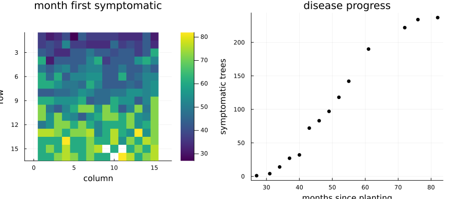
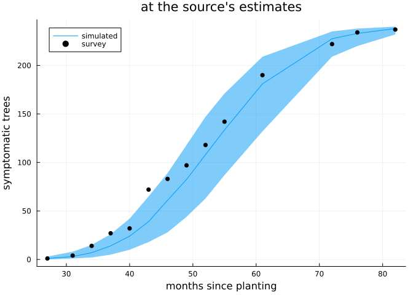
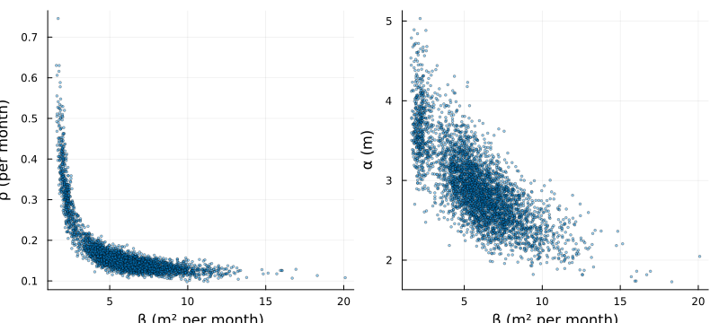
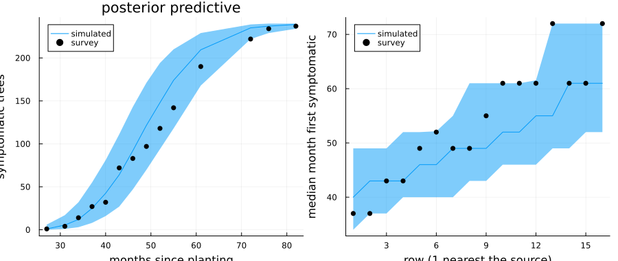

Fitting Bahia bark scaling of citrus
Simon Frost
- Overview
- The survey
- The model at the source’s estimates
- The exact likelihood
- Data augmentation
- Does the fit reproduce the survey?
- Approximate Bayesian computation
- The source trees
- Summary
- References
Overview
Bahia bark scaling is a disease of grapefruit in north-eastern Brazil. Laranjeira et al. (2006) planted 240 young trees in 16 rows of 15, 2 m apart, beside diseased adult trees, and inspected them every few months for five years and less often for two more, noting when each tree first showed symptoms. Cunniffe et al. (2014) fitted a spatial epidemic model to that survey: a susceptible tree is infected at a rate $\beta$ times the sum, over symptomatic trees, of an exponential kernel $(2\pi\alpha^2)^{-1} e^{-d/\alpha}$; an infected tree shows symptoms, and becomes infectious, at rate $\rho$; and nothing happens before the young trees reach epidemiological maturity at $\delta$ months. Because a tree is seen only at inspections, and only once it shows symptoms, the months at which trees were infected and became symptomatic are not observed. They fitted the model by Markov chain Monte Carlo with data augmentation, sampling those months alongside the parameters.
This vignette fits the zoo’s version of the model, citrus_bark_scaling (a monthly-step adaptation of theirs), to the same survey, in two ways with CellularAutomataInference: by data augmentation, with the exact likelihood of the monthly path, and by approximate Bayesian computation, with summaries of the survey.
ENV["GKSwstype"] = "100"
using EcologicalCellularAutomata
using CellularAutomataCore
using CellularAutomataInference
using Distributions
using Plots
using Random
using StatisticsThe survey
survey = citrus_survey()
insp = survey.inspections
println("inspections (months since planting): ", insp)
println("trees first seen with symptoms at each: ", survey.newly_symptomatic)
println("never seen with symptoms: ", count(ismissing, survey.first_symptomatic))inspections (months since planting): [27, 31, 34, 37, 40, 43, 46, 49, 52, 55, 61, 72, 76, 82]
trees first seen with symptoms at each: [1, 3, 10, 13, 5, 40, 11, 14, 21, 24, 48, 32, 12, 3]
never seen with symptoms: 3grid = [coalesce(survey.first_symptomatic[15(r - 1) + c], NaN) for r in 1:16, c in 1:15]
plot(heatmap(1:15, 1:16, grid; yflip=true, color=:viridis, xlabel="column", ylabel="row",
title="month first symptomatic", aspect_ratio=1),
scatter(insp, cumsum(survey.newly_symptomatic); xlabel="months since planting",
ylabel="symptomatic trees", legend=false, color=:black,
title="disease progress"); layout=(1, 2), size=(900, 400))
Figure 1: The survey. Left: the month at which each tree was first seen with symptoms (row 1 nearest the diseased adult trees; white, never). Right: the number of trees seen with symptoms by each inspection.
The model at the source’s estimates
The model’s defaults are the source’s posterior medians: $\alpha = 2.51$ m, $\beta = 4.42$ m² per month, $\rho = 0.170$ per month and $\delta = 22.7$ months. Two hundred simulations of the grove from planting:
prob = problem_citrus_bark_scaling()
function progress(θ, seed)
sol = solve(remake(prob; p=θ, seed); saveat=insp, save_start=false)
return [citrus_symptomatic(u) for u in sol.u]
end
θsource = (α=2.51, β=4.42, ρ=0.170, δ=22.7)
runs = reduce(hcat, [progress(θsource, s) for s in 1:200])
band(runs, q) = [quantile(view(runs, k, :), q) for k in axes(runs, 1)]band (generic function with 1 method)function progress_plot(runs, title)
plot(insp, band(runs, 0.5); ribbon=(band(runs, 0.5) .- band(runs, 0.05),
band(runs, 0.95) .- band(runs, 0.5)),
label="simulated", xlabel="months since planting", ylabel="symptomatic trees",
title, legend=:topleft)
return scatter!(insp, cumsum(survey.newly_symptomatic); color=:black, label="survey")
end
progress_plot(runs, "at the source's estimates")
Figure 2: Two hundred simulations at the source’s posterior medians (median and 90% band) against the survey.
The exact likelihood
The rule of citrus_bark_scaling states its transition probabilities, so the core’s path_logpdf gives the exact probability of a monthly path of the grove. Data augmentation needs it as a function of the months of infection and symptoms; citrus_loglik computes the same number from those months directly, in about the square of the number of trees operations instead of that times the 82 months:
fit = citrus_fit()
z = citrus_latent(fit)
println("citrus_loglik ", citrus_loglik(θsource, z, fit), " path_logpdf ",
path_logpdf(prob, citrus_path(z, prob)))
t1 = @elapsed for _ in 1:20
citrus_loglik(θsource, z, fit)
end
t2 = @elapsed path_logpdf(prob, citrus_path(z, prob))
println("milliseconds: ", round(1000t1 / 20; digits=2), " against ", round(1000t2; digits=1))citrus_loglik -1572.5311951135523 path_logpdf -1572.5311951135577
milliseconds: 0.25 against 6.4Data augmentation
The latent variables are each tree’s months of infection and of first symptoms. A tree seen with symptoms at an inspection became symptomatic after the previous one; a tree never seen with them may have been infected or not. citrus_latent_step! updates each tree’s months in turn by Metropolis-Hastings, and DataAugmentation alternates those sweeps with adaptive Metropolis moves of the parameters. The priors are the source’s: uniform on $[0, 1000]$ for $\alpha$ and $\beta$ and on $[0, 26]$ for $\delta$, exponential with mean 1/12 for $\rho$. Four chains of 220,000 iterations, the first 20,000 discarded and every tenth kept:
priors = (α=Uniform(0, 1000), β=Uniform(0, 1000), ρ=Exponential(1 / 12), δ=Uniform(0, 26))
function augmented(fit)
return AugmentedModel((θ, z) -> citrus_loglik(θ, z, fit),
(rng, z, θ) -> citrus_latent_step!(rng, z, θ, fit), priors,
citrus_latent(fit; δ=20.0))
end
θ0 = (α=3.0, β=5.0, ρ=0.15, δ=20.0)
chains = sample(Xoshiro(1), augmented(fit), DataAugmentation(; parameter_steps=5, init_scale=0.05),
MCMCThreads(), 20_000, 4; progress=false, initial_params=fill(θ0, 4),
discard_initial=2_000, thinning=10)
da = posterior_summary(chains)
source = (α=(2.51, 1.96, 3.21), β=(4.42, 2.79, 7.31), ρ=(0.170, 0.135, 0.235),
δ=(22.7, 17.9, 25.4))
r3(x) = round(x; sigdigits=3)
println("parameter here: median [95%] source: median [95%] R-hat ESS")
for k in keys(da)
q = da[k].q
println(rpad(k, 10), lpad("$(r3(q[2])) [$(r3(q[1])), $(r3(q[3]))]", 26),
lpad("$(source[k][1]) [$(source[k][2]), $(source[k][3])]", 24),
lpad(round(da[k].rhat; digits=3), 8), lpad(round(Int, da[k].ess), 7))
endparameter here: median [95%] source: median [95%] R-hat ESS
α 2.87 [2.14, 4.04] 2.51 [1.96, 3.21] 1.009 935
β 5.82 [1.95, 10.9] 4.42 [2.79, 7.31] 1.01 701
ρ 0.147 [0.115, 0.397] 0.17 [0.135, 0.235] 1.016 414
δ 22.3 [17.5, 25.0] 22.7 [17.9, 25.4] 1.0 6824draws = reduce(vcat, [c.values for c in chains])
d = draws[1:20:end, :]
plot(scatter(d[:, 2], d[:, 3]; xlabel="β (m² per month)", ylabel="ρ (per month)",
markersize=1.5, alpha=0.4, legend=false),
scatter(d[:, 2], d[:, 1]; xlabel="β (m² per month)", ylabel="α (m)", markersize=1.5,
alpha=0.4, legend=false); layout=(1, 2), size=(800, 360))
Figure 3: The joint posterior: β against ρ and against α (every 20th draw of the four chains).
The chains agree (R-hat near one). The medians lie close to the source’s, the infection rate a little higher and the dispersal scale a little longer, and the intervals for $\beta$ and $\rho$ are wider, with a long upper tail of $\rho$ paired with low $\beta$ (a tree infected later shows symptoms sooner), and $\beta$ traded against $\alpha$.
Does the fit reproduce the survey?
Simulations from 200 draws of the posterior, each with its own seed:
idx = round.(Int, range(1, size(draws, 1); length=200))
post_runs = Matrix{Int}(undef, length(insp), 200)
row_first = Matrix{Float64}(undef, 16, 200)
for (j, i) in enumerate(idx)
θ = (α=draws[i, 1], β=draws[i, 2], ρ=draws[i, 3], δ=draws[i, 4])
sol = solve(remake(prob; p=θ, seed=1000 + j); saveat=insp, save_start=false)
post_runs[:, j] = [citrus_symptomatic(u) for u in sol.u]
first = [something(findfirst(u -> u[t] == Int8(2), sol.u), length(insp) + 1)
for t in 1:240]
row_first[:, j] = [median(insp[min.(first[15(r - 1) .+ (1:15)], length(insp))])
for r in 1:16]
end
obs_row = [median(skipmissing(survey.first_symptomatic[15(r - 1) .+ (1:15)])) for r in 1:16]
plot(progress_plot(post_runs, "posterior predictive"),
plot(1:16, band(row_first, 0.5);
ribbon=(band(row_first, 0.5) .- band(row_first, 0.05),
band(row_first, 0.95) .- band(row_first, 0.5)),
label="simulated", xlabel="row (1 nearest the source)",
ylabel="median month first symptomatic"); layout=(1, 2), size=(900, 380))
scatter!(1:16, obs_row; color=:black, label="survey", subplot=2)
Figure 4: Posterior predictive check: simulations from 200 posterior draws (median and 90% band) against the survey; left, symptomatic trees over time; right, the median inspection at which each row first showed symptoms.
Approximate Bayesian computation
ABC needs only simulations. The summaries are the share of trees symptomatic at each inspection and each row’s median inspection of first symptoms, the spatial wave of the source’s Figure 2c; the distance is the mean absolute difference of each, added. Both are discrete, so many parameter sets share a distance, and the inclusive kernel (strict=false) keeps particles tied at the tolerance. Each simulation saves the states at the inspections only (save_start=false), so the $k$-th saved state is the $k$-th inspection. The source’s priors on $[0, 1000]$ put almost no mass near the posterior, so that particles drawn from them are wasted; here $\alpha$ and $\beta$ are uniform on $[0, 20]$ and $[0, 50]$, far beyond the posterior found above.
nins = length(insp)
first_inspection(sol) = [something(findfirst(u -> u[t] == Int8(2), sol.u), nins + 1)
for t in 1:240]
function summaries(first)
counts = [count(<=(k), first) for k in 1:nins] ./ 240
rows = [median(first[15(r - 1) .+ (1:15)]) for r in 1:16] ./ nins
return (; counts, rows)
end
observed = summaries([ismissing(m) ? nins + 1 : findfirst(==(m), insp)
for m in survey.first_symptomatic])
function distance(sol, obs)
s = summaries(first_inspection(sol))
return mean(abs.(s.counts .- obs.counts)) + mean(abs.(s.rows .- obs.rows))
end
abc_priors = (α=Uniform(0, 20), β=Uniform(0, 50), ρ=Exponential(1 / 12), δ=Uniform(0, 26))
post = abc_smc(prob, abc_priors, distance, observed; tolerance=0.07, nparticles=300,
rng=Xoshiro(2), solve_kwargs=(saveat=insp, save_start=false), strict=false, nsims_max=150_000)
abc = posterior_summary(post)
println(post)
for k in keys(abc)
q = abc[k].q
println(rpad(k, 4), "ABC ", r3(q[2]), " [", r3(q[1]), ", ", r3(q[3]), "] data augmentation ",
r3(da[k].q[2]), " [", r3(da[k].q[1]), ", ", r3(da[k].q[3]), "]")
endABCPosterior: 295 live particles of 300 for α, β, ρ, δ; tolerance 0.0887, log evidence -7.206
α ABC 1.4 [0.779, 16.4] data augmentation 2.87 [2.14, 4.04]
β ABC 18.3 [2.86, 47.9] data augmentation 5.82 [1.95, 10.9]
ρ ABC 0.145 [0.0725, 0.301] data augmentation 0.147 [0.115, 0.397]
δ ABC 20.0 [7.97, 25.7] data augmentation 22.3 [17.5, 25.0]Within its budget of 150,000 simulations the tolerance fell to about 0.09, not the 0.07 asked for. ABC then places $\rho$ where the likelihood does, with a wider interval, bounds $\delta$ only loosely, and cannot separate $\alpha$ from $\beta$: a shorter kernel with a higher rate gives much the same counts and row medians, so the particles spread along a ridge. The exact likelihood, which sees which trees were infected when and how far each was from the infectious ones, pins both down.
The source trees
The source’s text says 25 diseased adult trees stood beside the grove; its Figure 2a draws 30, which the model uses by default. Refitting with 25 (sources=:text), two chains:
fit25 = citrus_fit(; sources=:text)
chains25 = sample(Xoshiro(3), augmented(fit25),
DataAugmentation(; parameter_steps=5, init_scale=0.05), MCMCThreads(),
10_000, 2; progress=false, initial_params=fill(θ0, 2),
discard_initial=2_000, thinning=10)
s25 = posterior_summary(chains25)
for k in keys(s25)
println(rpad(k, 4), "25 sources ", r3(s25[k].q[2]), " [", r3(s25[k].q[1]), ", ",
r3(s25[k].q[3]), "] 30 sources ", r3(da[k].q[2]))
endα 25 sources 2.88 [2.11, 4.1] 30 sources 2.87
β 25 sources 5.77 [1.91, 11.8] 30 sources 5.82
ρ 25 sources 0.147 [0.113, 0.418] 30 sources 0.147
δ 25 sources 22.2 [17.2, 25.1] 30 sources 22.3The posterior hardly moves: the number of source trees is not why the fit’s intervals differ from the source’s.
Summary
| Question | Answer here |
|---|---|
| Does the exact path likelihood equal the fast complete-data likelihood? | yes, to rounding |
| Does data augmentation recover the source’s estimates? | the medians, closely; the intervals for β and ρ are wider |
| Does the fitted model reproduce the survey? | yes, within the 90% bands, though the survey runs a little slower than the median simulation in mid-epidemic and in the rows far from the source |
| What can ABC on summaries learn? | ρ, with a wider interval; δ loosely; not α and β separately |
| Do 25 source trees instead of 30 change the fit? | no |
With the source trees ruled out, the monthly steps of this adaptation (every tree spends at least a month infected before showing symptoms, and a tree changes state at most once a month) are the main remaining difference from the source’s continuous-time fit, and the likeliest reason for the wider intervals of $\beta$ and $\rho$.
References
Cunniffe, Nik J., Francisco F. Laranjeira, Franco M. Neri, R. Erik DeSimone, and Christopher A. Gilligan. 2014. “Cost-Effective Control of Plant Disease When Epidemiological Knowledge Is Incomplete: Modelling Bahia Bark Scaling of Citrus.” PLoS Computational Biology 10 (8): e1003753. https://doi.org/10.1371/journal.pcbi.1003753.
Laranjeira, Francisco F., Cristiane J. Barbosa, Hermes P. Santos-Filho, Tatiana F. Gonçalves, and Osmar Nickel. 2006. “Progress, Spread and Natural Transmission of Bahia Bark Scaling of Citrus in Brazil.” Annals of Applied Biology 148 (3): 187–95. https://doi.org/10.1111/j.1744-7348.2006.00057.x.